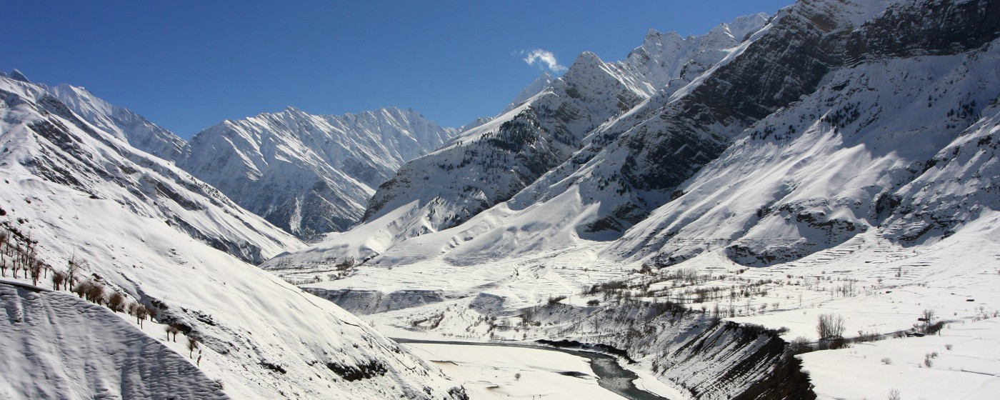
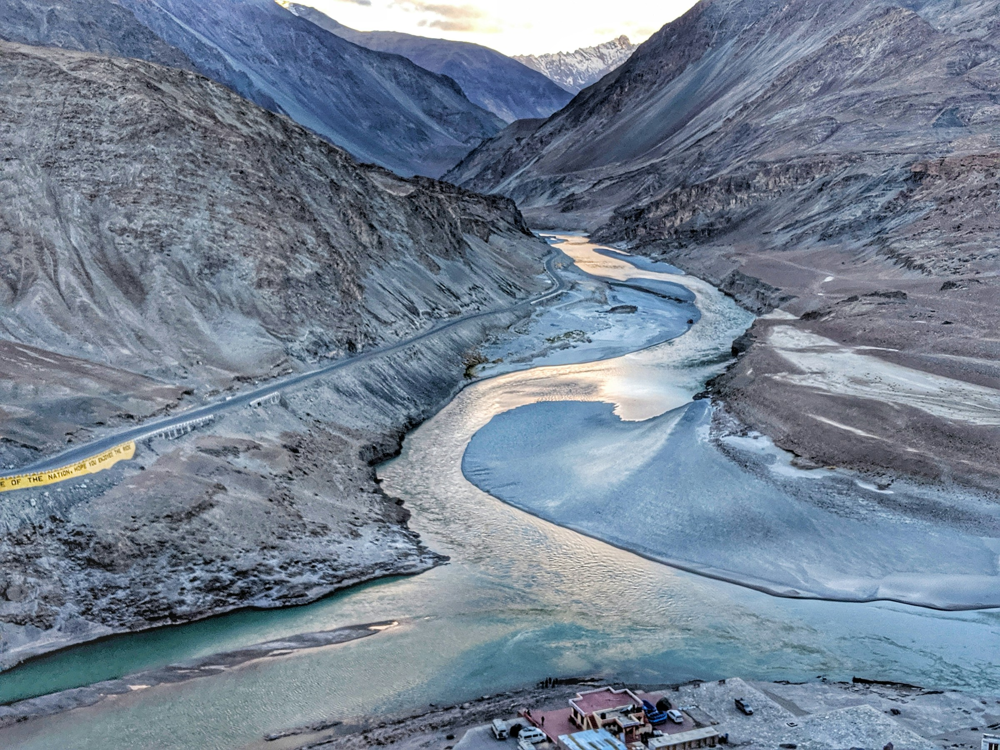

The Shivalik Hills in Himachal Pradesh form the outermost range of the Himalayas. These hills run parallel to the main Himalayas and are composed mostly of unconsolidated sediments like sandstone and clay. In Himachal, they stretch across districts like Sirmour, Solan, and parts of Kangra. The region is characterized by gentle slopes, dense forests, and a warm climate compared to the higher Himalayan ranges. The Shivaliks are ecologically rich but geologically young and prone to erosion and landslides. They also serve as a vital zone for agriculture and wildlife.

The Zanskar Range is a prominent mountain range in the eastern part of Himachal Pradesh, forming a part of the Trans-Himalayan region. It runs parallel to the Greater Himalayas and separates Zanskar Valley in Ladakh from Lahaul and Spiti in Himachal Pradesh. The range is characterized by high, rugged peaks, deep gorges, and harsh climatic conditions. Many peaks in this range are above 6,000 meters and remain snow-covered throughout the year. The Bara-lacha La, Shingo La, and Parang La passes connect this range with other parts of the Himalayas. The Zanskar Range is also the source of several rivers, including the Zanskar River, a tributary of the Indus.